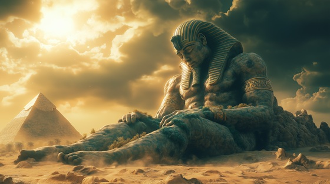

Welcome to the slow, eternal hymn of the earth itself. “Bones of the Earth” is a sludge-doom metal elegy honoring Geb, the Egyptian god of soil, land, and grounded life — a divine force beneath every tomb, crop, and temple.
Who is Geb?
Geb is the god of the earth, brother and lover of Nut (the sky), and father of Osiris, Isis, Seth, and Nephthys. He lies beneath the heavens, separated from Nut by the air god Shu, and is often depicted reclining on the ground with vegetation springing from his body.
Geb was seen as both fertile and unshakable — the one who laughs and causes earthquakes, the god in whom all life is planted and all death is received.
Geb: Bones of the Earth
Beneath the sky, I lie in stone
The seed, the root, the buried throne
The bones of kings are laid in me
And from my dust, all gods must be
My chest is earth, my breath is clay
I hold the dawn, I mold the day
When rain has fled and fire dies
I bloom the green where sorrow lies
My voice is deep, my silence wide
I am the pulse the stars can’t hide
I am Geb — the grounded flame
The breath beneath your holy name
Where roots descend and harvest grows
I hold the weight the heavens know
The cradle of both death and birth
I am the bones beneath the earth
They speak of sky, of fire, of flood
But none escape my womb of mud
I crack with drought, I flood with rage
Yet offer peace in time and age
No throne was built without my back
No tomb was carved without my track
I do not move, yet shape all fate
The land, the grave, the war, the gate
My voice is deep, my silence wide
I am the pulse the stars can’t hide
I am Geb — the grounded flame
The breath beneath your holy name
Where roots descend and harvest grows
I hold the weight the heavens know
The cradle of both death and birth
I am the bones beneath the earth
My children rise and rule the sky
But in the end, with me they lie
From pharaoh's crown to serpent’s coil
All souls return to sacred soil
The gods may clash, the stars may fall
Yet still I bear the weight of all
And when the last sun bleeds and bends
I’ll hold it still — where silence ends
My voice is deep, my silence wide
I am the pulse the stars can’t hide
I am Geb — the grounded flame
The breath beneath your holy name
Where roots descend and harvest grows
I hold the weight the heavens know
The cradle of both death and birth
I am the bones beneath the earth
Let storms arise, let stars divide
The soil will speak, the roots confide
I do not break, I do not flee
The gods stand tall because of me
So plant your prayer and sow your stone
For I am Geb, and you're not alone
In every field, in every breath
I bear the weight, I welcome death